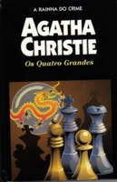

Os Quatro Grandes
The Big Four
O número 1 é Li Chang Yen, o cérebro, a força controladora. O número 2 é o dinheiro, o poder da riqueza. O número 3, uma mulher francesa, é o conhecimento. O número 4, “O Destruidor”. Unidos para dominar o mundo, eles fundam uma organização secreta — os Quatro Grandes — que passa a cometer vários assassinatos e violentos atentados terroristas. A audácia ilimitada do grupo assusta até mesmo Hercule Poirot. O detetive belga, ajudado pelo fiel amigo Capitão Hastings, vai ter que usar todas as suas pequenas células cinzentas para desvendar um dos mais misteriosos casos criados pela dama do suspense.